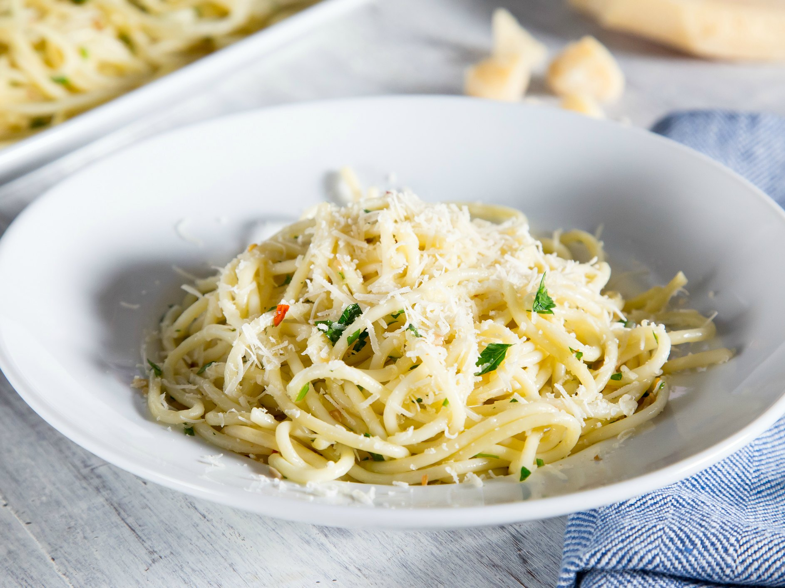

Garlic Pasta

Ingredients:
- 8 oz of spaghetti or pasta of choice
- 4 tablespoons of olive oil
- 6-8 cloves of garlic, minced
- 1/4 teaspoon of red pepper flakes (optional)
- Salt and pepper to taste
- Fresh parsley, chopped (optional)
- Grated or Shredded Cheese of your choice(optional)
Instructions:
- Cook pasta according to package instructions until al dente. Drain and set aside.
- In a large skillet, heat olive oil over medium heat. Add minced garlic and red pepper flakes
(if using). Sauté for 1-2 minutes until fragrant, being careful not to burn the garlic.
- Add the cooked pasta to the skillet and toss to coat in the garlic oil. Season with salt and pepper to
taste.
- Remove from heat and garnish with chopped parsley and cheese if desired.
- Serve immediately and enjoy!
Back to Home